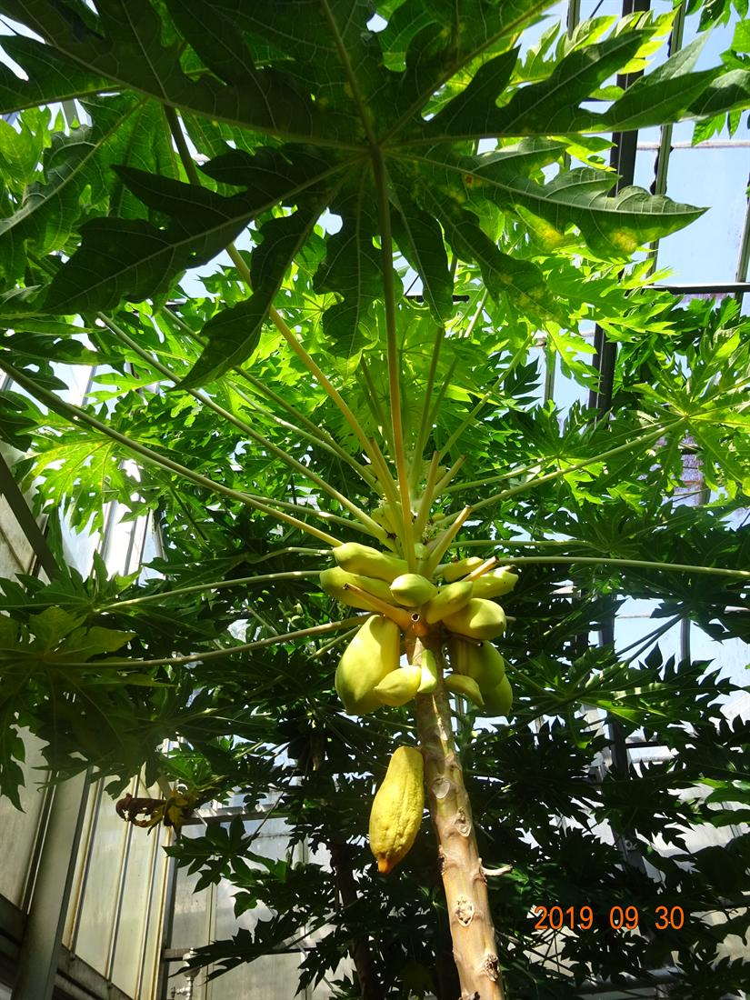
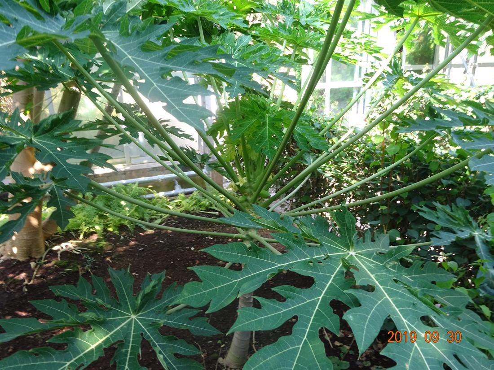

パパイヤ（蕃瓜樹）
Carica papaya L.
別名 · パパイア／チチウリ／ポーポー（沖縄）
パパイア科 · Caricaceae（パパイア属）── この図鑑で初めての科
燻太さんの言葉「葉っぱも特徴的なフルーツ。ほとんど食べたことがない、どんな味？ 畑にポツンと…趣味で育ててる？」……その問いに、ぜんぶ答えがある
初めての科と、「木のような草」
- Carica＝古いイチジクの呼び名から（葉が 055 イチジクに似るとも）。papaya はカリブの現地名。
- ⭐パパイア科（Caricaceae）は、この図鑑で初めての科。
- ⭐じつは「木」ではなく、大きな草：幹はやわらかく、枝分かれせず、まっすぐ上に伸びて、てっぺんに葉のかんむりをつける（幹のうろこ模様は、落ちた葉の跡＝葉痕）。育ちが早く、数か月〜1年で実がなることも。
⭐ 燻太さんの「葉っぱも特徴的」＝手のひらの葉
- ⭐大きな葉が、手のひらを大きく広げて、さらに深く切れ込んだような形（掌状に7つほどに深裂）。中空の長い葉柄の先につき、幹の上部から放射状に開く（写真②）。→ この“葉のかたち”も見どころ（063 ショウジョウソウのような「葉の形が面白い子」の仲間）。
- ⭐花も実も、葉のつけ根＝幹の上部につく（写真①）。→ 067 カカオの「幹に実（幹生果）」と、少し似た景色（カカオは幹ぜんたい、パパイヤは幹の先のほう）。
⭐ どんな味？（燻太さんの問い）
- ⭐熟すと、果肉は橙色でやわらかく、あまい（メロンやカスタードのような、少し独特の香り）。中の黒い種は、こしょうのような辛味（食べられる）。
- ⭐青いうち（未熟）は「野菜」＝青パパイヤ。シャキシャキで、タイのソムタム（青パパイヤのサラダ）や、炒めもの、千切りに。同じ実が、熟し方で「果物」にも「野菜」にもなる。——日本では出会いが少ないから、「ほとんど食べたことがない」のかも。
⭐⭐ パパインという酵素（燻太さんへ）
- ⭐パパイヤの名を持つ酵素「パパイン」＝タンパク質を分解する酵素（システインプロテアーゼ）。パパイヤから見つかったので、この名前。
- ⭐肉をやわらかくする（かたい肉を、パパイヤの葉や青い実と一緒に煮る／漬けると、タンパク質がほどけて柔らかくなる）。消化も助ける。→ おまけのパイナップル（ブロメライン）やキウイ（アクチニジン）と同じ「肉をやわらかくする果物」の仲間。
- ⭐パパインは、青パパイヤに多く、熟した実にはほとんど無い。⚠幹や葉を切ると出る白い乳液にもパパインが多く、肌につくとかぶれることがある。
⭐⭐ オスとメスが別 ── 植物の「性染色体のでき始め」
- ⭐パパイヤは、ふつう雌雄異株（オス株・メス株が別／両性花の品種もある）。実がなるのは、メス株か両性株だけ。→ 056 キカラスウリと同じ「株ごと性を分ける」仲間。
- ⭐⭐燻太さん（分子遺伝学者）に、いちばん伝えたい話：パパイヤは、植物の「性染色体」が“でき始めた”ばかりの姿を残しているモデルとして有名。オス株は、ごく若い（原始的な）Y染色体を持つ——動物のような立派な性染色体になる、その“はじめの一歩”を、この果物が見せてくれる。
- ⭐「畑にポツンと1本」でも実がなっていたなら、それはメス株か両性株（オス株だけなら実らない）。⭐趣味で育てている、というのも当たりかも：パパイヤは草で育ちが早く、暖かい地方（沖縄・九州など）では庭や畑で育てる人がいる（霜に弱く、寒いと枯れる）。